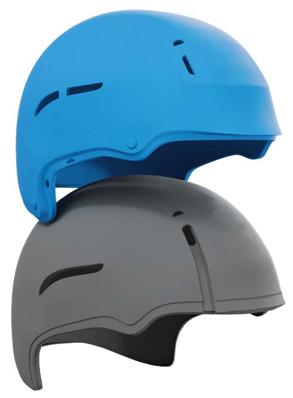
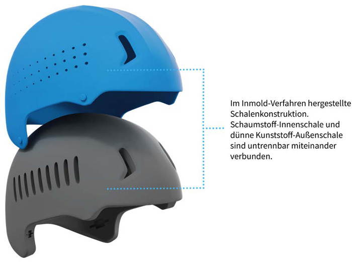
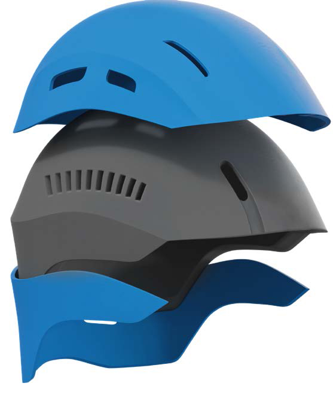
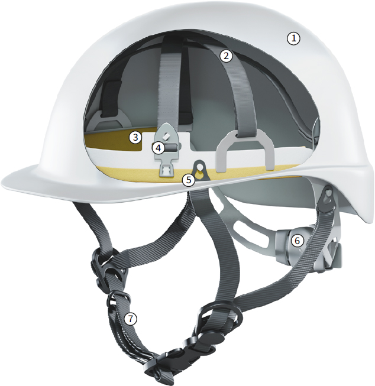
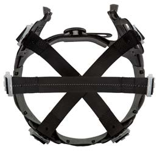
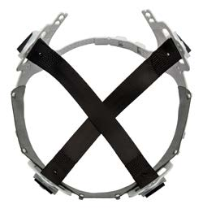
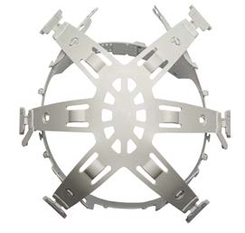
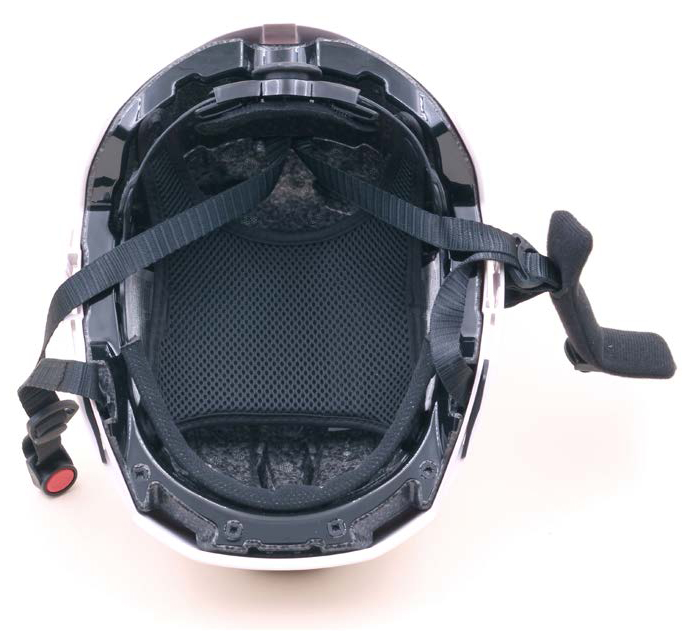

Eine essenzielle Aufgabe von Kopfschutz ist die Stoßdämpfung, also die Reduzierung von Kräften, die von außen auf den Kopfschutz einwirken. Der Aufbau des Kopfschutzes spielt dabei eine wichtige Rolle. Die Helmschale und Teile der inneren Ausstattung sind für die Aufnahme, die Verteilung, die Weitergabe und für die Reduzierung der Kräfte auf einen durch die jeweilige Norm festgelegten Wert, der auf den Prüfkopf einwirken darf, verantwortlich. Daher hängt die Schutzfunktion wesentlich von dem Aufbau dieser Komponenten ab.
Neben der Art des Kopfschutzes, wie Industrieschutzhelm, Bergsteigerhelm etc. haben sich zusätzliche Bezeichnungen – besonders bei den Fahrradhelmen – etabliert, die sich auf die Ausführung oder den Herstellungsprozess der Helmschale beziehen und entsprechende Eigenschaften zum Ausdruck bringen.
Marktübliche Bezeichnungen, wie Dünnschalen-Helm (Microshell-Helm) oder Hartschalen-Helm (Hardshell-Helm), leiten sich von der Ausführung der Helmschale ab. Die Bezeichnung "In-Mold-Helm" hingegen leitet sich aus dem Herstellungsprozess ab.

Abb. 8 Aufbau eines Hartschalenhelms
Hartschalenhelme besitzen eine robuste und stoßfeste Außenschale aus Kunststoff (Thermoplast) oder faserverstärktem Kunststoff (Duroplast). Die Materialdicke der Außenschale beträgt wenige Millimeter.
Die Stoßdämpfung bei Hartschalenhelmen kann über eine Kombination der Außenschale und einer Innenausstattung mit Stoßdämpfungsbändern erfolgen. Alternativ dazu kann die Stoßdämpfung über eine Kombination der Außenschale und einer Innenausstattung mit Schaumstoff-Innenschale aus expandiertem Polystyrol (EPS) oder expandiertem Polypropylen (EPP) erreicht werden. Dabei werden die Außenschale und die Schaumstoff-Innenschale miteinander verklebt.

Abb. 9 Aufbau eines Dünnschalenhelms
Eine dünne Schale aus Kunststoff (meist Polycarbonat) und eine Schaumstoffschale werden entweder in einem speziellen Herstellungsverfahren (In-Mold-Verfahren) untrennbar miteinander verbunden oder miteinander verklebt. Die Materialdicke der Schale ist im Vergleich zum Hartschalen-Helm weitaus geringer und beträgt weniger als einen Millimeter.
5.2.3 Hybridschalen

Abb. 10 Aufbau eines Hybridschalenhelms
Es handelt es sich um eine Kombination aus Hart- und Dünnschale sowie gegebenenfalls Weichschale (Teilbereiche ohne schützende Schale). Die Außenschale besteht im oberen Bereich, in dem die größte Aufprallenergie zu erwarten ist, aus einer robusten und stoßfesten Hartschale, die auf die Schaumstoffschale aufgeklebt wird.
Die weiter unten anschließenden Bereiche, wie Nacken- und Ohrbereiche, können mit einer Dünnschale verklebt oder im In-Mold-Verfahren verbunden werden. In Teilbereichen kann die Schaumstoff-Innenschale auch ohne schützende Schale ausgeführt werden. Mit der Hybridschalentechnik können leichtere Helmkonstruktionen erzielt werden, die gleichzeitig in Teilbereichen sehr robust sein können.
Diese Bezeichnung wurde in der Vergangenheit für Helme aus geschäumten Kunststoffen verwendet, die ohne schützende Helmschale hergestellt wurden. Diese Form der Ausführung spielt bei Industrieschutz-, Bergsteiger- und Fahrradhelmen keine Rolle mehr.
Das In-Mold-Verfahren stellt den Herstellungsprozess dar, bei dem thermoplastische Kunststoffe eingesetzt werden, die in Form von Kunststoffgranulat aus Polyethylen (PE) oder Polypropylen (PP) in eine feste Helmformvorlage aus Metall gegeben werden, in die vorab auch die dünne Helmschale aus Kunststoff eingelegt wird.
Durch den Einsatz von heißem Wasserdampf, der unter Druck durch kleine Löcher in der Helmformvorlage eingebracht wird, quellen (expandieren) die einzelnen Teilchen des Granulats um ein Vielfaches ihrer Ursprungsgröße zu Schaumstoffkügelchen auf und verbinden sich dabei dauerhaft und untrennbar mit den benachbarten Schaumstoffkügelchen zu einer formstabilen Schaumstoffschale. Gleichzeitig verbindet sich auch die dünne Helmschale aus Kunststoff vollflächig und untrennbar mit den heißen, aufgeschäumten Schaumstoffkügelchen – es entsteht ein stabiler, aber leichter Verbundwerkstoff.
Das Verfahren gewährleistet eine optimale Kraftübertragung von der Außenschale auf die Innenschale aus Schaumstoff und kommt bei der Herstellung von Sporthelmen zum Einsatz.
Beim Klebeverfahren werden die Schaumstoff-Innenschale und die Außenschale des Helms separat hergestellt und miteinander verklebt.
Bei einer punktuellen Verklebung besteht die Gefahr, dass sich die Helmschale und der Schaumkern aufgrund auftretender Spannungen voneinander lösen können.
Die Verbindung von stoßdämpfenden Innenausstattungselementen mit der Helmschale ist auch mit Klemm- oder Schraubverbindungen möglich.
Die Innenausstattung stellt den inneren Teil eines Helms dar und liegt auf dem Kopf auf. Sie dient dazu, den korrekten Sitz des Helms zu gewährleisten und die bei einem Aufprall auftretende Energie aufzunehmen, zu verringern und auf den Kopf zu verteilen.
Die Innenausstattung mit Stoßdämpfungsbändern kann über folgende Komponenten verfügen:
Ein optionaler Kinnriemen wird am Kopfband oder an der Helmschale befestigt und gehört nicht zur Innenausstattung.

Abb. 11 Prinzipieller Aufbau einer Innenausstattung mit Stoßdämpfungsbändern
1: Helmschale; 2: Stoßdämpfungsbänder (Textil- oder Kunststoffausführung); 3: Kopfband mit Schweißband
aus hautfreundlichem Material; 4: Aufhängung für die Stoßdämpfungsbänder; 5: Befestigung für Kinnriemen und Nackenschutz; 6: Tiefliegendes Nackenband mit drehbarer Kopfgrößenanpassung bietet einen guten Sitz
des Helms und verbessert den Halt auf dem Kopf; 7: 4-Punkt-Kinnriemen
Die Innenausstattungen unterscheiden sich in der Anzahl der Befestigungspunkte zwischen Tragbändern und Helmschale und erhalten dadurch ihre Bezeichnung. Kommen zwei Textilbänder zum Einsatz, werden sie über vier Befestigungspunkte am Helm angebracht und man spricht von einer 4-Punkt-Gurtband-Innenausstattung. Bei der Verwendung von drei Textilbändern lautet die Bezeichnung entsprechend 6-Punkt-Gurtband-Innenausstattung. Analog dazu werden die Konstruktionen mit Kunststoffbändern als 4- bzw. 6-Punkt-Kunststoff-Innenausstattungen bezeichnet, wobei die Tragbänder meist zu einer Einheit zusammengefasst werden und nicht wie bei den Textiltragebändern aus mehreren Komponenten bestehen.

Abb. 12a 6-Punkt-Gurtband-Innenausstattung

Abb. 12b 4-Punkt-Gurtband-Innenausstattung

Abb. 12c 6-Punkt-Kunststoff-Innenausstattung
Die Innenausstattung mit Schutzpolsterung kann über folgende Komponenten verfügen
Diese Innenausstattungen bestehen aus einer Schaumstoffschale aus geschäumtem Kunststoff, meist expandiertem Polystyrol (EPS) oder expandiertem Polypropylen (EPP). Zur Verbesserung des Tragekomforts kann auf der Innenseite der Schaumstoffschale ein Komfortpolster angebracht werden.
Während die Stoßdämpfung bei der ursprünglichen Innenausstattung über die Dehnung der Tragbänder erzielt wird, erfolgt die Stoßdämpfung bei dieser Innenausstattung über die Verformung der Schaumstoff-Innenschale – bis hin zum Bruch des Materials.

Abb. 13 Darstellung einer Innenausstattung mit EPS-Innenschale und Komfortpolster
Es kommen sowohl Stoßdämpfungsbänder als auch eine Schutzpolsterung zum Einsatz, sodass die Stoßdämpfungsanforderungen sowohl durch den Einsatz von Tragbändern als auch durch eine Schaumstoffschale gemeinsam erfüllt werden.